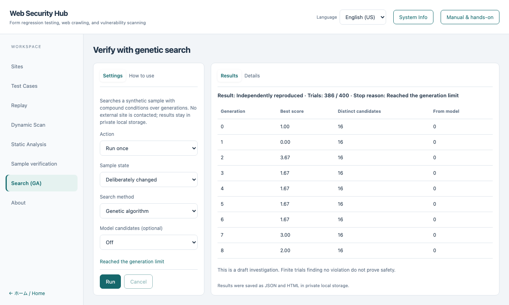
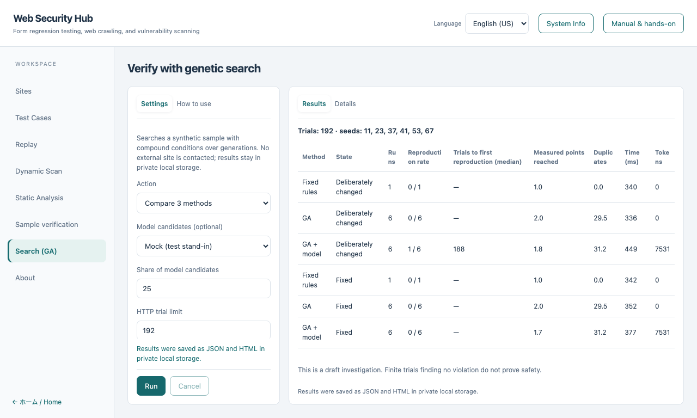

Genetic search hands-on
日本語 · Sample verification · Basic course
Search a synthetic sample whose violation needs three conditions at once, over several generations.
No external target, real credentials or API key is required. A language model is optional and off by default.
1. Open the workspace
Choose Search (GA) in the left navigation. Settings and How to use stay on the left; Results and Details stay on the right.
The sample is private to this workspace and independent of the site selected in site management.
2. Search the changed sample once
Select Run once, Deliberately changed, Genetic algorithm and model Off, then choose Run.
The search proposes candidates, runs each one with an independent normal control, keeps the better ones, recombines and mutates them, and repeats.
When a candidate looks like a violation, it is re-executed in a separate session; only that independent run counts as Independently reproduced.

Each row of the table is one generation: the best score, the number of distinct candidates and how many came from a model.
Click a row, or focus it and press Enter, to see every candidate of that generation (operator, parents, values, score) under Details.
The score only ranks candidates for the next generation. It is never a verdict.
3. Confirm that baseline and fixed are not reproduced
Run Baseline and Fixed with the same settings. The result must read Nothing to reproduce.
The search also stops for an explained reason when a limit is reached, when it is cancelled, when the normal control fails or when the sample source changes.
Finite trials that find no violation do not prove safety.
4. Compare three methods
Select Compare 3 methods. The workspace runs, under the same HTTP trial limit and the same pre-fixed seeds, on the changed and fixed samples:
| Method |
What it does |
| Fixed rules |
A deterministic list of boundary and power-of-two values. It learns nothing from results |
| GA |
Selection, crossover and mutation guided by observed reachability and novelty |
| GA + model |
The same GA, with part of the candidate slots offered to a model. Needs a model setting other than Off |

Read the table as measurements, not as a ranking: reproduction rate (independent re-execution confirmed the violation), trials until the first reproduction, measured points reached, duplicate candidates, time and tokens.
A reproduction on the fixed sample would be a false positive; the table highlights it.
With the default of 192 trials the GA found the violation in few or none of the six seeds, so raise the trial limit and compare again. The result depends on the seeds and limit; no method is guaranteed to win.
5. Model candidates (optional)
- Off is the default. The search is complete without a model.
- Mock is a deterministic test stand-in that nudges the best candidates. It is not a language model and makes no performance claim.
- Model on this machine connects to an OpenAI-compatible server on
127.0.0.1 (for example a llama.cpp server). Only typed candidate values and scores are sent, never URLs, credentials, files or evidence.
Every reply is checked against a strict schema and the allowed values. An invalid, truncated, refused, oversized or duplicate reply is not executed; after a limited number of retries the GA continues without the model.
- The model cannot change the scope, profiles or HTTP trial limit. Candidates that replace part of the GA's slots do not consume extra trials.
- Sending to a remote service is intentionally not offered in this window. The command line needs an explicit permission flag, an environment variable name for the key and a cost ceiling.
6. Cancel and storage
Cancel stops the current search or comparison; a cancelled comparison is marked incomplete. Results are stored as JSON and HTML in the application's private data directory. The stored report contains the exact synthetic inputs, so do not publish it.
Use the same search from the CLI
npm run verifier:run -- --genetic-fixture --mode changed
npm run verifier:run -- --genetic-fixture --mode changed --method rules
npm run verifier:run -- --genetic-fixture --mode changed --llm mock
npm run verifier:run -- --genetic-compare --llm mock
Source dependencies are required for CLI use. Ordinary application operations need no commands.